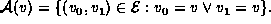
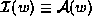

Data Structures and Algorithms with Object-Oriented Design Patterns in Java
Terminology
Consider an undirected graph
as given by Definition
.
An edge
emanates from
and is
incident on
both vertices
v
and
w
.
The set of edges emanating from a vertex
v
is the set  The set of edges incident on a vertex
w
is .
Copyright © 1998
by
Bruno R. Preiss, P.Eng.
All rights reserved.
 Data Structures and Algorithms
with Object-Oriented Design Patterns in Java
Data Structures and Algorithms
with Object-Oriented Design Patterns in Java .
.
 Copyright © 1998 by Bruno R. Preiss, P.Eng. All rights reserved.
Copyright © 1998 by Bruno R. Preiss, P.Eng. All rights reserved.